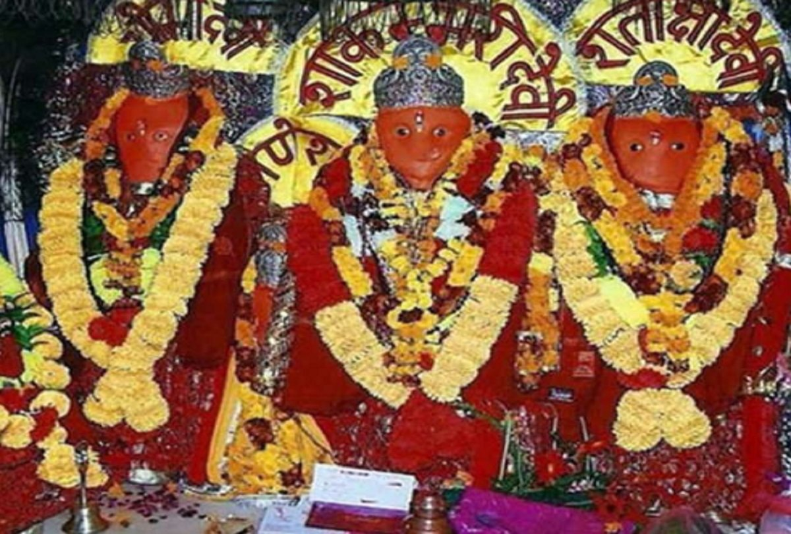
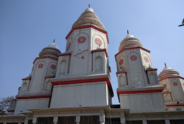

It's Religious Places
Religious Places of Saharanpur

Shakumbhari Devi Temple
Shakti Peeth Shakumbhri, meaning the abode of Shakti Goddess Shakambhari or Shakumbhri, is situated in the Jasmour village area, at a distance of 40 km to the north of Saharanpur in Uttar Pradesh state of Northern India. It has two important temples of Hindu deities: one of the Goddess (Devi) Shakumbhri herself and another one, Bhura-Dev temple, located one kilometer away from it to the east, of the deity Bhairava, considered to be her guard. Another temple dedicated to this goddess and quite famous is near the Sambhar Lake, in Rajasthan.Another big temple of Shakumbari devi is located in Badami, of Bagalkot District of Karnataka.
Bhuteshwar Temple
Shri Bhuteshwar Mahadev Mandir is a Famous Lord Shiva Temple cum residence,as per beliefs lord Shiva visit the temple and be there to give the blessings...
